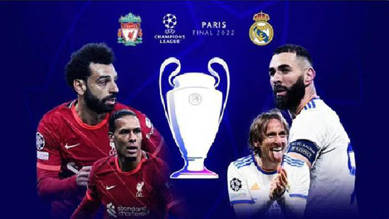

Liverpool - Real Madrid
UEFA Champions League 2022/23
Dẫn trước 2-0, Liverpool vẫn bị Real Madrid "vùi dập" trong mưa bàn thắng ngay tại Anfield
Nhà ĐKVĐ Champions League sẽ bị loại ngay từ vòng 1/8? Rất nhiều người hâm mộ đã nghĩ tới điều đó khi chứng
kiến
14 phút đầu tiên trận đấu lượt đi giữa Liverpool và Real Madrid. Đội chủ nhà nhập cuộc đầy hứng khởi với hàng
loạt
pha lên bóng dồn dập.
Darwin Nunez mở tỉ số ngay ở phút thứ 4 bằng một pha thoát xuống phá bẫy việt vị và
đánh
gót cực kỳ ngẫu hứng. Tới phút thứ 14, cách biệt được nhân đôi cho Liverpool. Thủ môn Courtois có pha xử lý
bóng
vụng về đến khó tin và tạo điều kiện để Salah dễ dàng dứt điểm tung lưới.
Một khởi đầu ác mộng đối với
Real
Madrid. Ai cũng biết Liverpool lợi hại đến thế nào khi thi đấu trên sân nhà tại đấu trường Champions League.
Một
số người bắt đầu nhắc lại về trận thắng 4-0 của Lữ đoàn đỏ trước Real Madrid cách đây 14 năm, cũng ở vòng
1/8.
Nhưng nghịch cảnh không làm HLV Ancelotti chùn bước. Nhà cầm quân lão luyện từng có nhiều kinh
nghiệm
trong những cuộc lội ngược dòng đã nhanh chóng giúp các học trò ổn định lại tinh thần.
Chỉ hơn 5 phút
sau
bàn
thua thứ hai, đội khách đã tìm được bàn rút ngắn tỉ số. Người lập công là Vinicius với tình huống xoay trở và
cứa
lòng hiểm hóc đánh bại thủ môn Alisson.
Bước ngoặt tiếp theo của trận đấu đến vào cuối hiệp một khi thủ
thành
bên phía Liverpool mắc sai lầm. Nhận đường chuyền về của đồng đội, Alisson lại đưa bóng đến đúng vị trí của
Vinicius. Trái bóng sau đó bật ngược vào khung thành và giúp Real Madrid san bằng cách biệt.
Thế trận
xoay
chiều chóng mặt. Nỗ lực duy trì quyền kiểm soát bóng để làm chủ tình hình của Liverpool tan vỡ trước các đợt
tấn
công trực diện và mạnh mẽ đến từ Real Madrid.
Ngay đầu hiệp hai, Kền kền trắng đã nâng tỉ số lên 3-2.
Hàng
thủ
Lữ đoàn đỏ hoàn toàn bỏ quên Militao và tạo điều kiện cho trung vệ này dễ dàng đánh đầu thành bàn sau cú đá
phạt
của Modric.
Thảm hoạ hàng thủ tiếp tục khiến Liverpool trả giá ở phút 55. Benzema và Rodgrygo đập nhả
như
chỗ
không người để tiến vào vòng cấm địa trong khi hàng loạt cầu thủ áo đỏ chỉ biết đứng nhìn. Cú dứt điểm của
Benzema
đưa bóng đập vào Gomez rồi đổi hướng đi vào khung thành khi mà thủ môn Alisson đã bị lỡ trớn.
Tỉ số chung cuộc 5 - 2
- 4' Darwin Núñez
- 14' Mohamed Salah
- 21' Vinícius Júnior
- 36' Vinícius Júnior
- 47' Éder Militão
- 55' Karim Benzema
- 67' Karim Benzema
1
2
3
4